Predictive Digital Twin for SAG Mill Energy Efficiency in Copper Mining
A digital twin of a copper SAG mill: a Kalman filter fuses noisy ore-hardness sensors, gradient boosting predicts specific energy and throughput, and the energy bill is priced with real marginal costs from 95 monthly reports of Chile's energy commission. The plant is simulated, because no public SAG mill telemetry exists; the energy prices and the concentrator benchmark are real.
This page shows the project's results. The methodology, the design decisions and the limitations are documented in the repository's README.
7.1 Kalman Filter — hardness sensor fusion
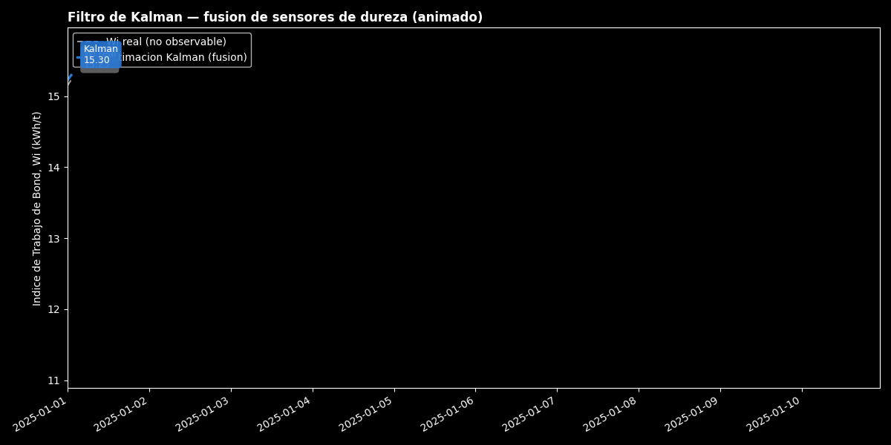
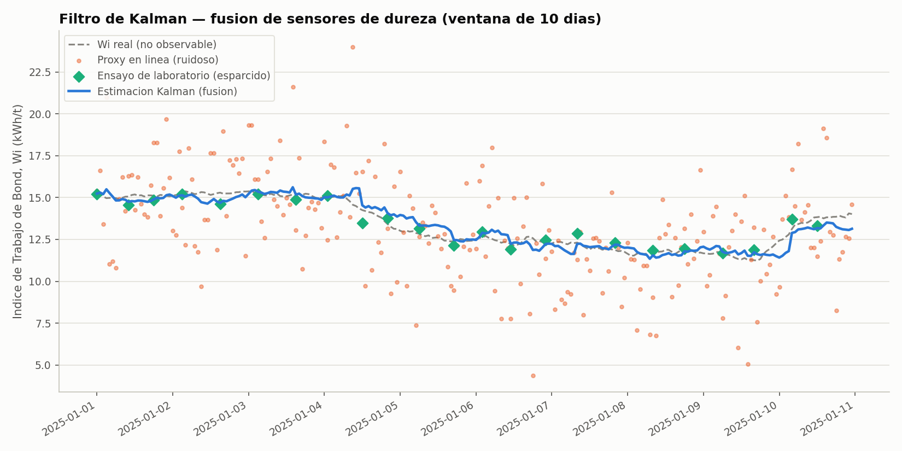
7.2 Exploratory analysis — correlations
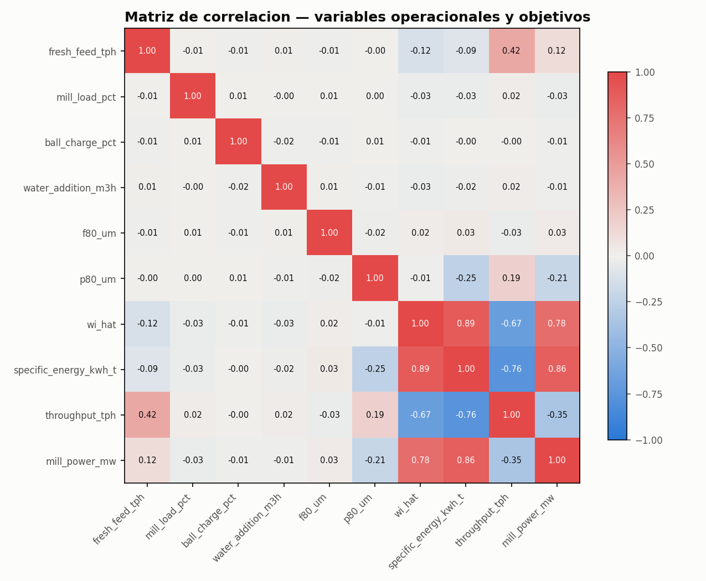
The Kalman estimate (wi_hat) correlates 0.89 with true specific energy and −0.67 with throughput — consistent with Bond's physics: harder ore demands more energy per tonne and, under a fixed power ceiling, forces throughput down. fresh_feed_tph and throughput_tph correlate at only 0.42 (not 1.0): the gap is exactly the regime where installed power, not the feeder setpoint, is the binding constraint.
7.3 Multi-output model — model comparison
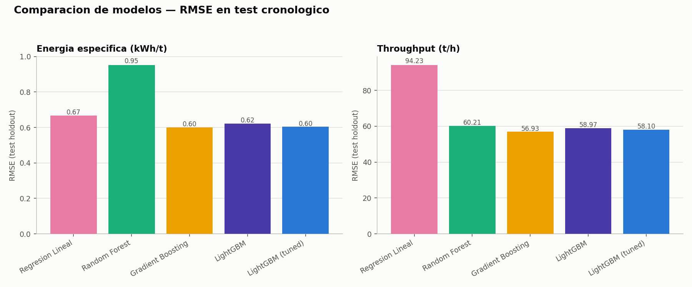
7.4 Feature importance (best model)
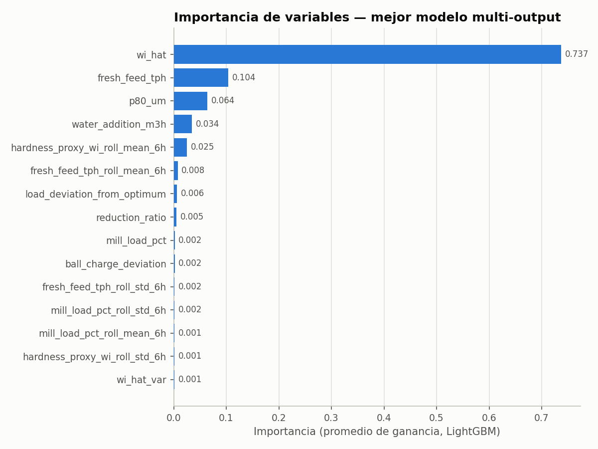
The single most important feature in the predictive model is exactly what the Kalman Filter produces: the soft sensor isn't an isolated academic exercise — it's the signal that most explains the mill's energy consumption.
7.5 Learning curve and residuals
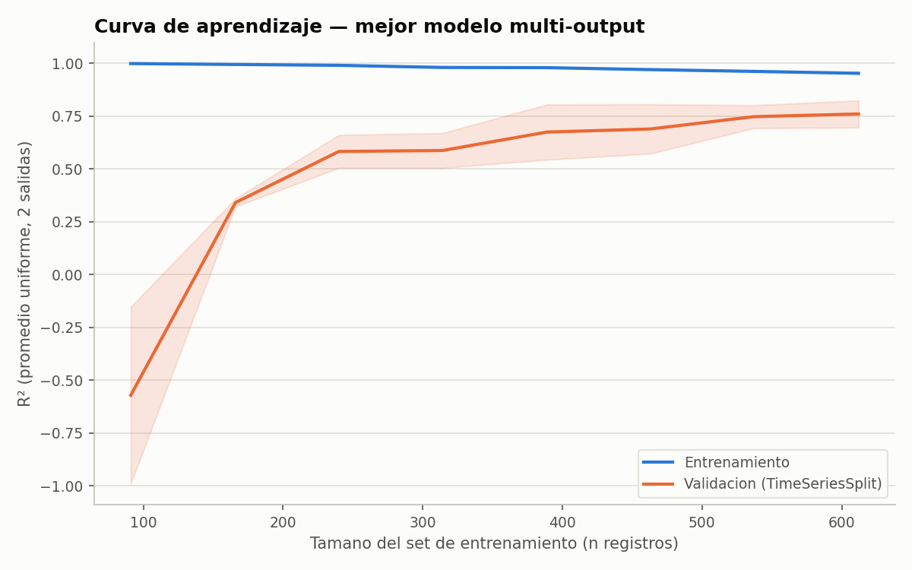
The validation curve stabilizes around R² ≈ 0.78-0.79 from ~500 training records onward, with a moderate gap versus training performance (R² ≈ 0.96-1.00) — a sign of controlled variance, not severe overfitting.
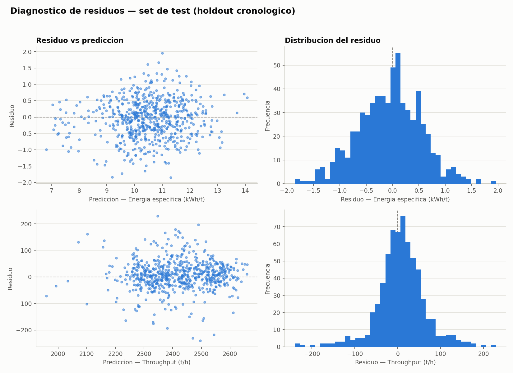
Residuals for both outputs are symmetrically distributed around zero with no obvious systematic pattern against the prediction (reasonable homoscedasticity).
7.6 Energy demand forecasting (24h ahead)
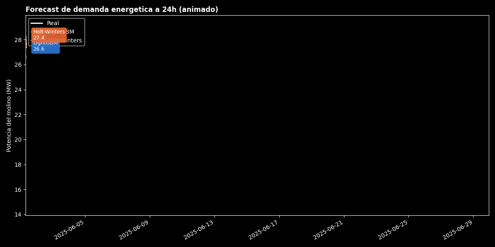
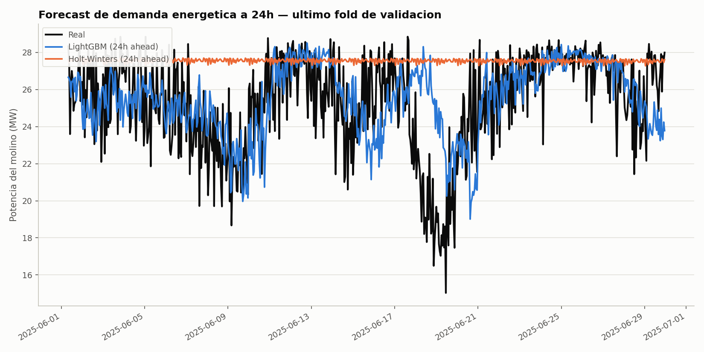
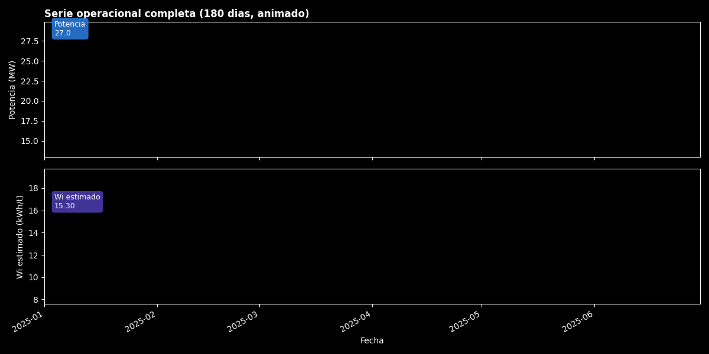
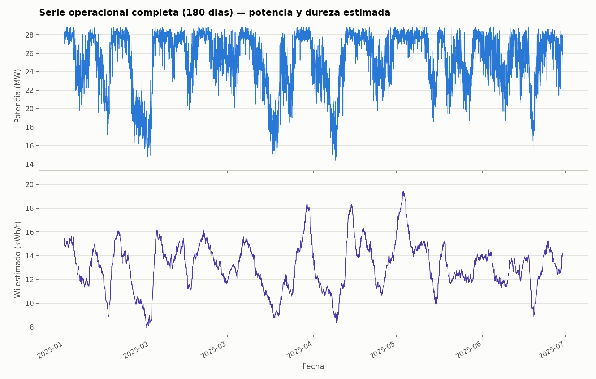
7.9 PyTorch MLP surrogate — activation comparison and benchmark vs. tree ensemble
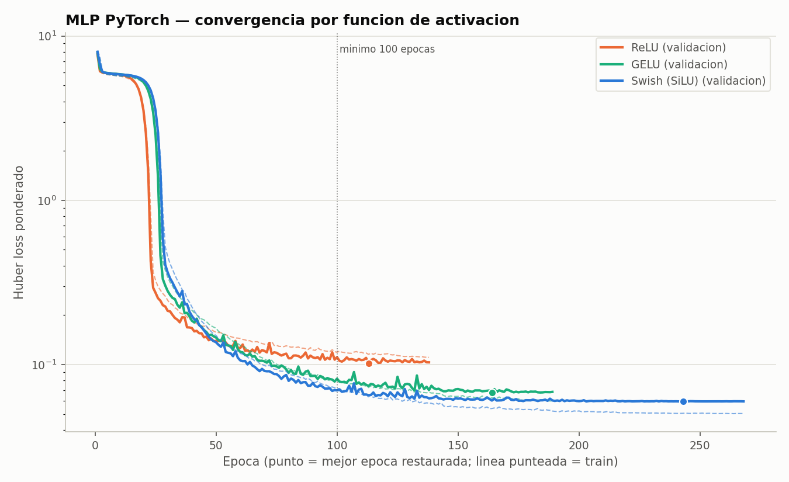
Swish generalizes best of the three, narrowly ahead of GELU and clearly ahead of ReLU on this architecture — consistent with the smooth, non-monotonic gradient near zero that both Swish and GELU share helping optimization more than ReLU's hard zero cutoff does at this depth/width. This is an empirical result specific to this dataset and network size, not a general claim that Swish beats ReLU everywhere.
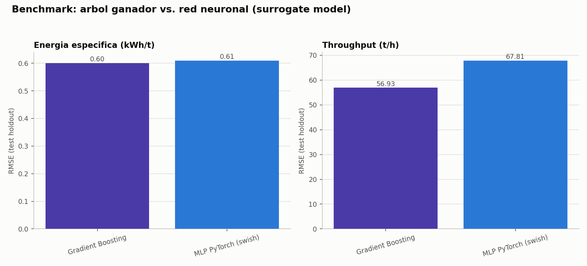
The tree ensemble stays the production model — it beats the MLP on both targets — but the neural surrogate lands within ~5 points of R² using a completely different function class and no tree-specific feature engineering, which cross-validates that the tree model's performance reflects a genuine, recoverable signal rather than an artifact of one algorithm family. All comparison metrics (tree models + MLP activations) are additionally persisted to a local DuckDB table (outputs/reports/model_metrics.duckdb, model_comparison) for ad-hoc SQL analysis.
7.10 Real-data anchoring: energy price and concentrator consumption
The mill's energy is priced at the real marginal cost of the Crucero 220 kV bus, read from 95 monthly
reports of the Comisión Nacional de Energía (2018-02 to 2026-08), including image-only reports read with OCR.
Where a month is both published and implied by another report's percentage change, the two agree within
1.8% (98 pairs). Two reports that copied the previous month's figures were detected and discarded.
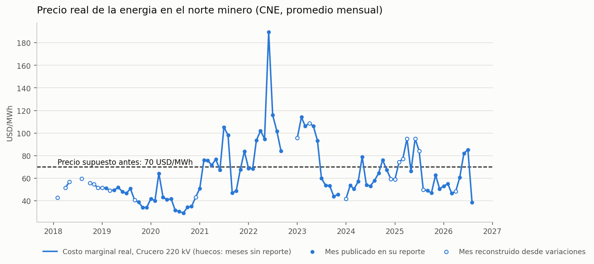
The June 2022 peak (USD 189.5/MWh) is confirmed by two independent reports: the July report publishes it and the August report implies it from its own monthly change. Yearly averages: 2018 53.2, 2019 45.5, 2020 39.6, 2021 72.4, 2022 102.1, 2023 80.0, 2024 59.5, 2025 67.5, 2026 58.7 USD/MWh.
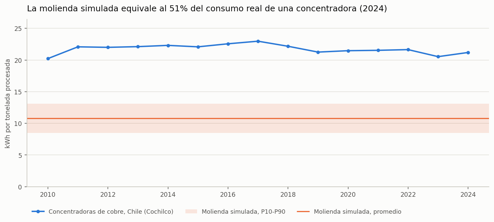
The simulated grinding circuit uses 10.8 kWh/t on average (P10-P90 8.5-13.1), 51% of a real concentrator's electricity. The rest of a concentrator (crushing, flotation, regrinding, thickening, pumping) has to fit in the remaining half, so the simulator's scale is plausible. This is a consistency check, not a calibration: the simulator was not tuned to hit it, and a national average says nothing about a specific plant's ore.